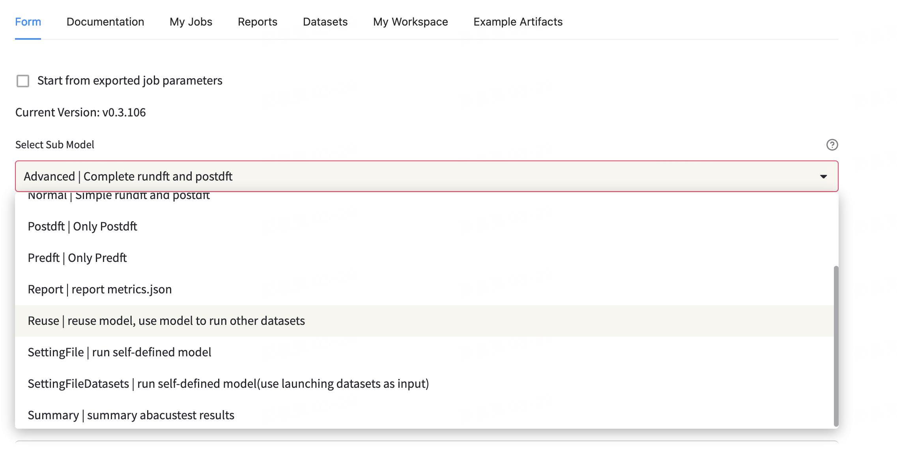
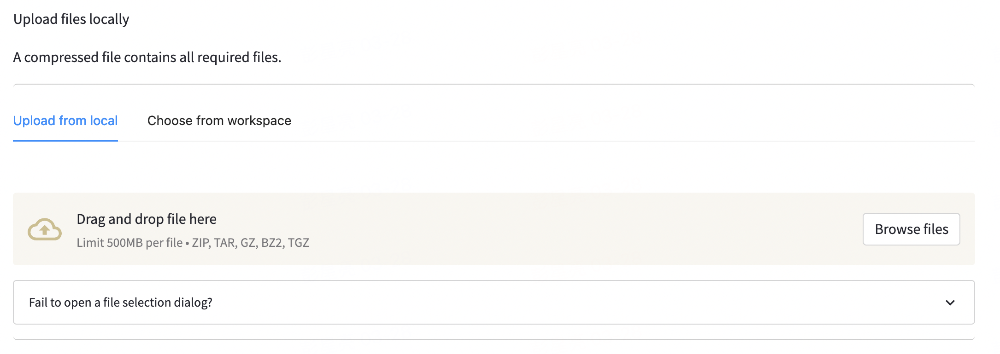
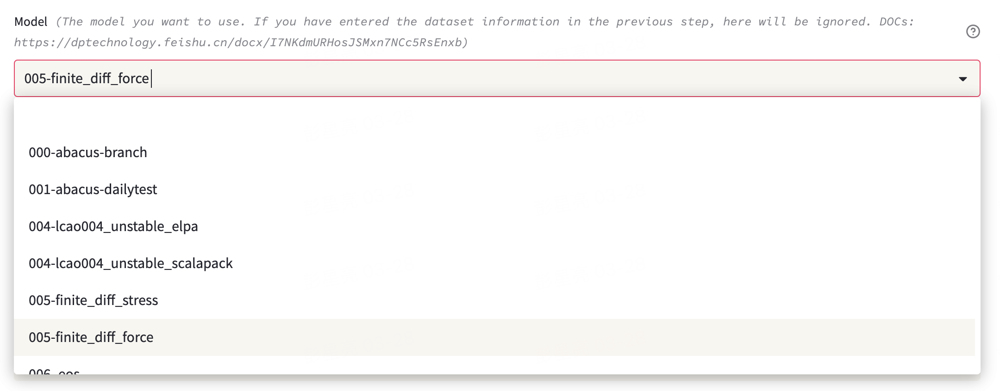
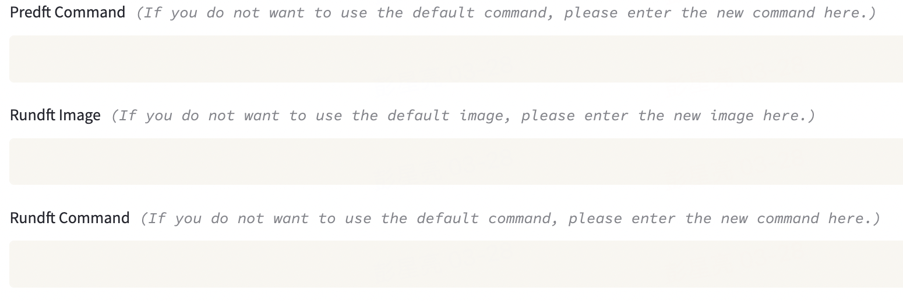
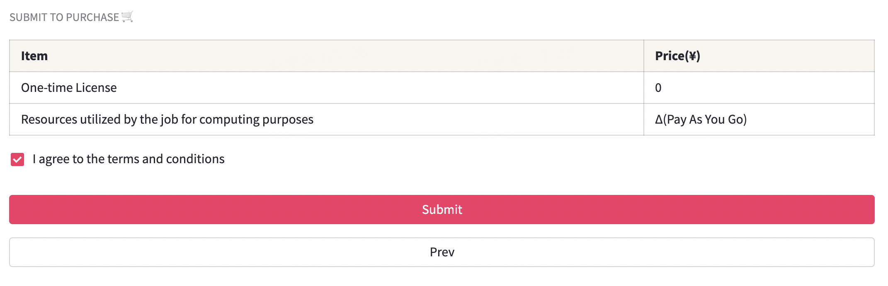
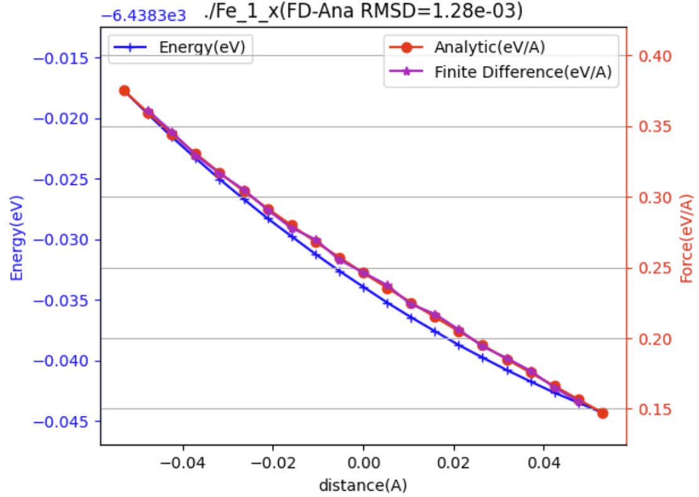
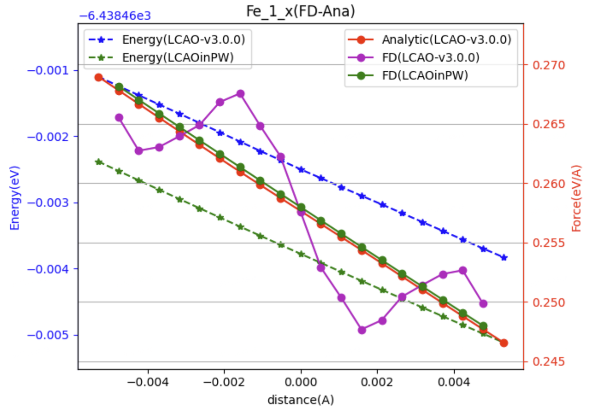

在 ABACUS 中进行差分测试
作者：金祖鑫，邮箱：jinzx@aisi.ac.cn；彭星亮，邮箱：pengxl@aisi.ac.cn；周巍青，邮箱：zhouwq@aisi.ac.cn
工作单位：北京科学智能研究院
最后更新时间：2024/3/29
背景
对 DFT（Density Functional Theory）电子结构计算软件而言，数值计算的精度是软件质量的重要一环。纸面上，一个完整的 DFT 计算只包含构建例如哈密顿矩阵、对角化、最优化等寥寥几步，但在代码层面，很多数学操作的数值实现并非如纸上的公式一般平凡：一些基本的数值算法可能无法兼顾性能与精度；开发者可能需要采用专门的算法以同时满足两者，或者将一些控制参数交给用户设置自行权衡。不难想象，在一定计算资源下获得的精度一般受限于算法中精度最薄弱的一环。
从开发者的角度，单元测试固然是一种可将整体精度问题分割后方便逐个分析的有力措施，但在程序模块较多、部分环节不便于单元测试的情况下，集成测试亦是一种有效的检测方法。从使用者的角度，集成测试也能更为直接地反映软件的整体质量。
在 DFT 计算中能量与力的计算占据核心地位。通常能量会在自洽场收敛后依照能量泛函的表达式计算获得，而力的计算则会依赖 Hellmann-Feynman 定理，采用与能量计算不同的路径。由于两者存在密切的关联而在实现上又迥然不同，能量与力的一致性测试往往被视作最基本的数值集成测试。
能量的数值微分
记第 个原子的坐标 ，其沿 方向的受力为 ，根据定义有
在最低阶的差分近似下
其中 表示 方向的单位向量。
数值微分的步长与误差
差分公式本身作为近似会带来离散化误差。对于上述一阶导的最低阶差分，误差随步长关系为 。
【更高阶的差分及相应的误差项可参考 https://en.wikipedia.org/wiki/Finite_difference_coefficient】
虽然离散化误差会随着差分步长的减小而降低，但这并不意味着差分步长越小越好。由于数值计算中的数不可避免地只具有有限的精度，当步长小于一定程度后数值微分的整体误差反而会上升。例如，双精度浮点数有大约 16 位有效数字，这意味着即使对正弦函数这样简单、平滑的函数做数值微分，当步长取到 时只会得到纯粹的噪音。不仅如此，由于浮点数减法在“大数减大数得到小数”情况下存在有效位数丢失，理想的步长应远大于 。
以正弦函数为例，若能进行足够精度的计算，有
我们得到 在 处的数值差分导数
与理论上的 对比，有 20 位左右的有效数字。然而，在双精度浮点数的运算下，
10 位有效数字在两个三角函数值的减法中丢失，由浮点运算规则补齐的位数（蓝色数字）只是一些噪音，最后导致数值微分结果只有 6 位有效数字。
在上述三角函数例子中，浮点运算带来的精度误差主导了最终结果中的误差。事实上，如步长取为 则能获得8-9位有效数字，优于步长为 的情况。但若取为 ，则离散化误差将变为主导，最终只能得到约6位有效数字。实践中，为得到尽可能小的数值微分误差，步长的选择应当在离散化误差与精度误差间取得一个均衡。例如，https://en.wikipedia.org/wiki/Numerical_differentiation 中介绍了一个进行前向差分【】时的推荐步长。当采用不同的差分方案时，最优步长的估计方式也不尽相同。
由于 DFT 的能量源于一个自洽场计算，本身受到 SCF 收敛阈值等参数的影响，因此做数值微分时其精度不应直接视作相应的浮点数精度，而需综合多方面考量。
利用 ABACUS 自动工作流进行差分测试
ABACUS（原子算筹）是一款国产的开源密度泛函理论软件。
在软件中，我们可以直接使用 abacustest 进行原子受力（force）的差分测试。
应用地址（需要 Bohrium 账号获得本文档提供的差分工作流，但实际上差分测试程序也可以自己写）：https://app.bohrium.dp.tech/abacustest?request=GET%3A%2Fapplications%2Fabacustest
以下是该自动工作测试流的使用说明。
1. 准备算例
在进行测试之前，需要自己准备需要进行测试的算例，每个算例需要把 ABACUS 计算需要的所有文件（包括赝势和轨道文件）都放在一个文件中。同时需要额外准备一个 info.txt 文件，用于指定需要进行差分测试的原子以及 xyz 方向，每一行是对一个需要测试的原子的设置，格式为 <原子符号> <原子序号> <测试方向>...
>>> ls Fe #假设你的算例你有一个Fe的算例，并且把计算需要的所有文件已经准备在Fe文件夹中
Fe_gga_7au_100Ry_4s2p2d1f.orb Fe_ONCV_PBE-1.2.upf info.txt INPUT KPT STRU
>>> cat Fe/info.txt
Fe 1 x y
Fe 2 y
>>> zip -r fe.zip Fe # 对算例文件夹进行压缩
比如上述设置，表明对第一个 Fe 原子的 x 和 y 方向进行测试，以及对第二个 Fe 原子的 y 方向进行测试。
2. 打开应用登入账号
打开应用地址，填入自己的 bohrium 账号密码进行登入
3. 选择 abacustesst 的模式
点击 Form，并在 Select Sub Model 处选择 Reuse model

4. 上传算例
在 Upload files locally 处，上传准备好的算例压缩包。完成后在页面的最后处点击 Next,进入下一页的设置。

5. 选择 force 差分计算模式
在 Model 处选择 005-finite_diff_force 进行 force 的差分测试

6. 计算细节设置
Predft Command可以对差分的细节进行设置，此处不填会使用默认值：python prepare.py -d 0.0001 -n 2，其中，-d定义差分点的步长，单位是 bohr，-n定义每个正负方向改变的构型数量。Rundft Image可以对进行 abacus 计算使用的镜像进行设置，此处不填会使用默认的 abacus 的 intel latest 镜像：registry.dp.tech/deepmodeling/abacus-intel:latest。Rundft Command可以设置进行 abcus 计算的命令，此处不填会使用默认值：OMP_NUM_THREADS=1 mpirun -np 16 abacus | tee out.log。需要注意的是测试使用的机型是固定为 alic32_m64_cpu（此机型的实际物理机为 16，所有使用 16 核并行计算），如果自己设置计算命令时需注意并行的核数。

其他选项不需要额填写。点击页面最后的 Next，再点击 Next 进入最后的计算提交页面
7. 提交计算
在最后的 Review 页面的最后部分，点击 I agree to the terms and conditions 后点击 Submit 进行提交。

8. 查看结果
计算完成后会在页面中显示差分值和解析值的作图结果。

图. 对第一个 Fe 原子的 x 方向的差分测试结果。图最上方的 FD-Ana RMSD 是差分值和解析值得均方差。此算例表明 Fe_1_x force 得解析误差~1.28e-03 eV/A。此测试设置的步长为 0.01，差分点个数为 10（predft_command: python prepare.py -d 0.01 -n 10)，任务地址：https://app.bohrium.dp.tech/abacustest?request=GET%3A%2Fapplications%2Fabacustest%2Fjobs%2Fjob-abacustest-v0.3.97-770b66
ABACUS 能量差分与解析力结果不一致的可能原因及解决方案
原因 1：差分的步长选取过小/SCF 收敛不充分
差分与解析解之间的误差来源于两部分，一部分 SCF 基态与真实基态之间的误差；二是差分操作本身导致的数值误差。前者与 SCF 计算的收敛判据（scf_thr）、k 点采样（kspacing）、平面波基组个数（ecutwfc）等有关；而后者与差分的步长选取有关。具体的讨论可以参考本文第一部分的背景介绍。相关的问题也在 Issue#3645 中被较为详细的讨论。
解决方案 1
SCF 参数不变，重新预估一个合理的差分步长。
解决方案 2
调小 SCF 计算的收敛判据（scf_thr）、k 点采样（kspacing）；增大平面波基组个数（ecutwfc），使得 SCF 的计算更为准确。
原因 2：LCAO 计算中的“egg box effect”
当差分不一致发生在 LCAO（采用数值原子局域轨道）的计算之中时，出现例如 Issue#3685 中展示的周期性波动的时候，那么有可能是因为 LCAO 中格点积分部分导致的“egg box effect”（此效应形容由于格点离散化带来的周期性平移对称性的破缺，原子在空间平移，会产生计算出来的能量和受力的规律性震荡，就像装鸡蛋的鸡蛋盒所呈现出来的形状）。

为了确认这一点，你可以设置 basis_type=lcao_in_pw。因为 LCAO_IN_PW 的计算避开了格点积分，可以帮助确认是否是格点积分导致的数值误差。
解决方案 1
使用 basis_type=lcao_in_pw 避开格点积分。
解决方案 2
加密实空间的格点，减小“egg box effect”误差的量级。
参考文献
- Issue #3645 https://github.com/deepmodeling/abacus-develop/issues/3645
- Issue #3685 https://github.com/deepmodeling/abacus-develop/issues/3685
- Force 差分测试 （LCAO）（这个文档只有飞书有权限才可以浏览）